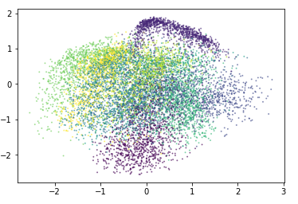
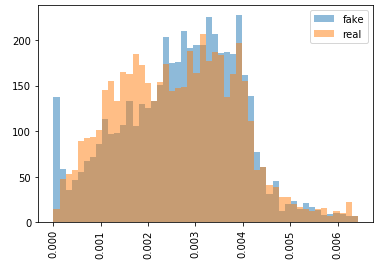
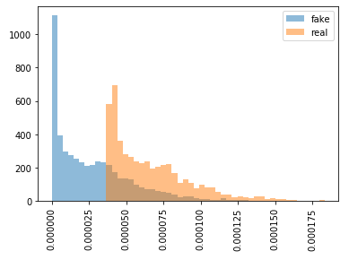

Density estimation
Why is density estimation hard?
In high dimensions are the many directions and a large amount of volume.
In the previous section we considered VAEs and GANs for pseudo-density estimation.
The deeper problem to the learned prior approach seems to be that we dont have have any good models of density...

Parzen windows
Given the tip above, I had a play with parzen windows to see how well they can be used to turn a VAE into a density estimate.
$$
p(x) = \frac{1}{n}\sum_i^n k(x, \hat x_i)
$$
So, I used the hidden space of a VAE as the inputs to a parzen window (hoping the the latent space would give greater generalisation as it is lower dimensional).

So using the equation above we can estimate the probability of data.
$$
p(x) = \frac{1}{n}\sum_{i=0}^n k(f(x), f(\hat x_i))
$$

Cool, we seem to have a nice structured estimate of P(x), with gradient pointing in meaningful directions.
But, using this parzen window we seem to get equal estiamtes of P(x) for images from MNIST and for generated (white noise) images.

Ok, the problem is that the kernels are too wide and are allocating probability to locations further away from the data. Solution, reduce the width of the kernels.


The problem is now that the gradients don't point in any meaningful directions. They will simply lead you to the nearest data point.
Maybe there is an optimal tuning of the width to give desired results.
But I didnt spend much time exploring this.
Future directions
Quick wins: Could try playing with
Gaussian processes
or
Neural processes.
Maximum likelihood
In an ideal world we would like the ability to approximate arbitrary distributions. To learn $ f: X \to Y $ such that the probability density is preserved. An easy and intuitive way to learn a density model is by maximum likelihood estimation.
$$
\begin{align}
\hat \theta &= \mathop{\text{argmax}}_{\theta} E \left[ p(x, \theta), x\sim D \right] \\
\end{align}
$$
Thus, models that allocates higher probability to observed $ x $s are better.
However, the class of functions that $\theta$ can represent is limited.
We would like to use an abitrary functon approximator like neural networks,
but they fail at ML because they can simply predict $ nn(x_i) = \infty $
for all inputs. They can do this because they are not normalised.
A simple representation like a tensor that is indexed by possible $x $s has a
similar normalisation problem (naively optimising it to do ML will give $ \infty $).
But, it can be easily constrained/regualised to give normalised results.
$$
p(x) = T[x] \\
$$
$$
\hat T = \mathop{\text{argmax}}_{T} \mathbb E \left[ p(x), x\sim D\right] \text{s.t.} \sum_i T_i = 1
$$
Which might be implemented as simply the decay of each element towards zero probabilty.
But, just for mnist $T$ would need have $(28 \times 28)^{256}$ elements for each possible image (which according to Google's calculator is infinity...).
In principle this idea could be applied to neural networks as well.
So, if we increase the probability of a location, that should decrease the probability of other locations.
$$
\begin{align}
p(x) = \frac{f(x, \theta)}{\int f(x, \theta) dx} \\
\end{align}
$$
Empirical estimates of $f$ when it is a NN. Hmm, not sure how to do that...
Want to find a parameterised fn that is easily integrated. Oh, how about $e^{x}$...
$$
\begin{align}
f(x) &= g_n( \dots g_1(g_0(x))) \\
\int f(x) dx &= ?? \\
\end{align}
$$
Want some sort of decomposition of the integral into something nicer.
Want an analytical way to calculate it!?
Normalising flows
It turns out there is already a vast literature using this exact idea.
The main idea can be summarised as: What if instead we could start with
a simple distribution and transform it into an arnitrary distribution?
$$
p(f(x)) = \frac{1}{det(J(f))}p(x) \\
$$
Using the equation above, we can keep track of how probability density has been
stretched or contracted.
However, there is a problem. The bijectors (such as $f$ in this case) must be
invertible.
This means; to generate a (say) 784 dim image, we need to start with a simple
distribution also in 784 dims.
This doesnt seem ideal, we really want to assume a small number of latent variables
generate the high dimensional data.
Some recent work (Masked autoregressive flows)
attempts to decompose the computation of $p(x)$ into a sequence.
Future work
Downhill regularisation
Another (random) idea I entertained was 'downhill regularisation'.
The problem highlighted about is that it is expensive to regularise NNs to be normalised.
We dont care about the absolute magnitude of the outputs, only that large
amounts of probability density are not allocated to points we havent seen.
So it may be possible to regularise for this?
$$
\text{down}(f, x_i) = \sum_j f_{\theta}(x_i + \epsilon_j) - f_{\theta}(x_i) \\
\mathcal L = -f_{\theta}(x_i) + \lambda \cdot \text{down}(f, x_i) \\
$$
Maximise the (log) probability of each $x_i$, but try to make each datapoint the locally highest point.
All directions point downward.
I spend a couple of hours training models, but got no interesting results.
Although I might want to come back to it.
Heirarchical flows